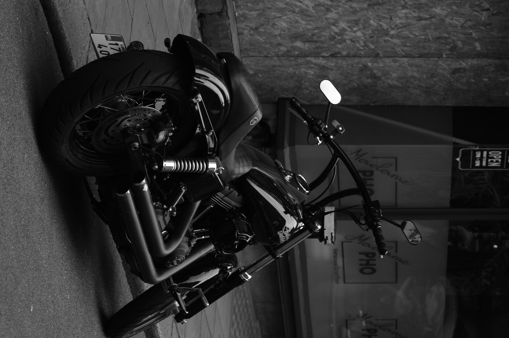
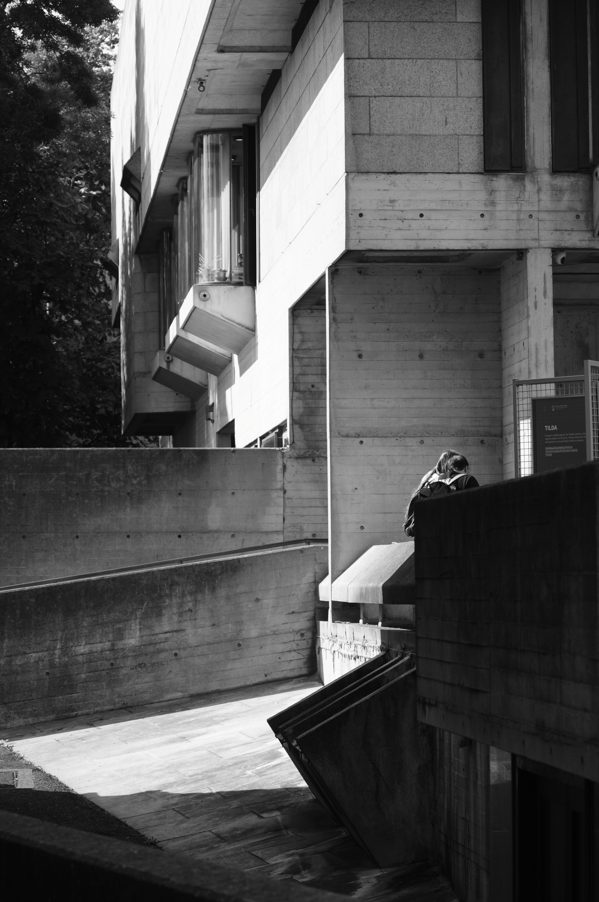
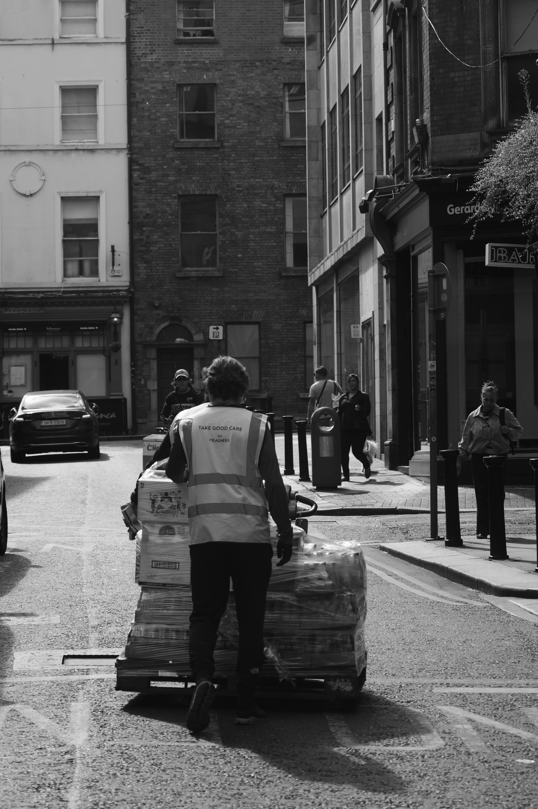
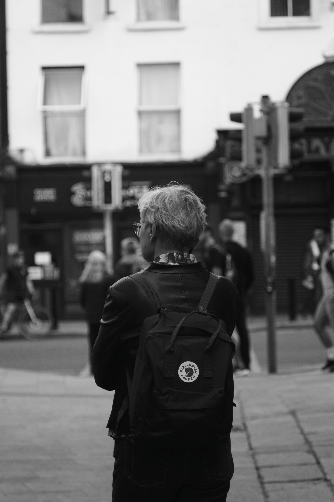

the moments

A motorcycle rests outside a neighborhood shop.

A passerby moves through a stark concrete passage.

A delivery worker pushes a loaded trolley through the city.

A passerby pauses to take in the busy street.